发信人: professorli (professor li), 信区: outdoor
标 题: 【野协部长团报】【第三弹】技术部——攀岩队！
发信站: 饮水思源 (2013年06月07日01:17:49 星期五)
让大家久等了，攀岩队团爆来袭！！！！！！！！！！！！
攀岩队队长李樵带队团爆啦！：NC来啦，微电男，不知何时加入了脑残队伍，番号：六脑
残，不过也可以叫我小六，原名：李樵。爱攀岩，爱户外，爱贝爷，爱野协。
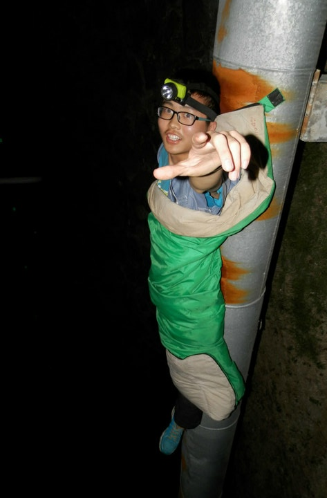 screen.width - 200){this.width = screen.width - 200}">
貌似是小时候看完《蜘蛛侠》后，就喜欢到处乱爬，后来加入攀岩队后才找到了攀岩的真
正乐趣。
喜欢登顶后的一览众山小，喜欢野外的静谧星空，喜欢置身自然的心旷神怡。
攀岩队副队长 温宗麟：我爱野协，喜欢攀岩，我觉得总有一天我也能上“大屋檐”的，嘿
嘿，说不定就是在下学期。
（对攀岩的认识：）我觉得攀岩是一项很有意思的运动，听野协的老人们说，攀岩对臂力
、韧带和稳定性都有一定的要求，其实我觉得手抓点、脚踩点的位置和方式，动作是否标
准和动作的连贯性以及自己在攀岩过程中得到的一些经验都有助于提升自己的攀岩水平，
不过我觉得最关键的还是要多多练习才能不断地提升自己的攀岩水平。
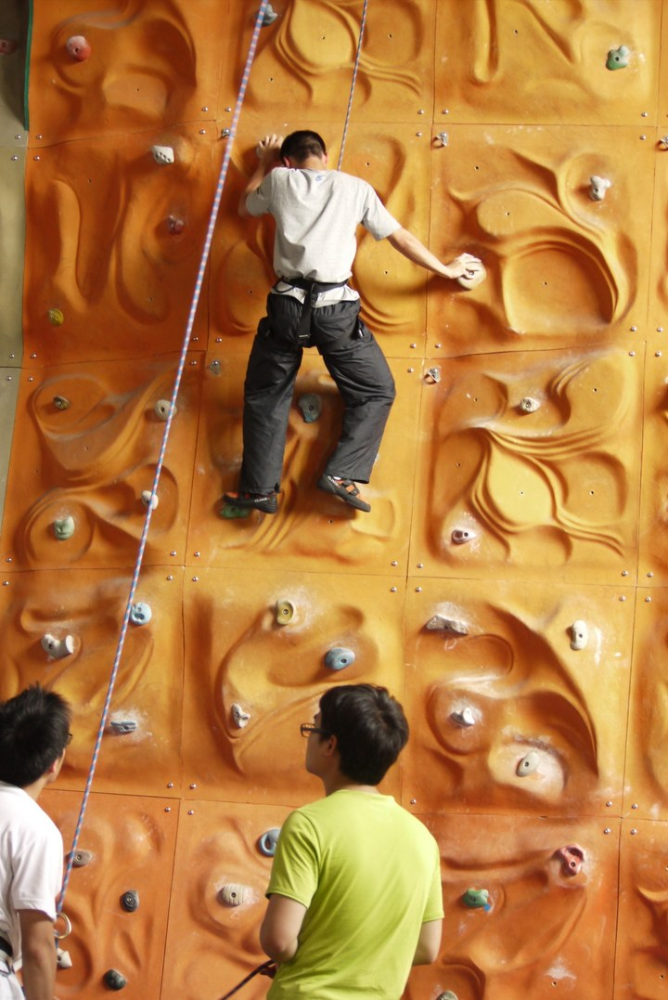 screen.width - 200){this.width = screen.width - 200}">
这是在技能大赛的时候我上难度线B线是拍的，从图的左下角可以看到当时的会长，现在的
前会长亲自为我们这些比赛人员打保护。嗯嗯，还不错。
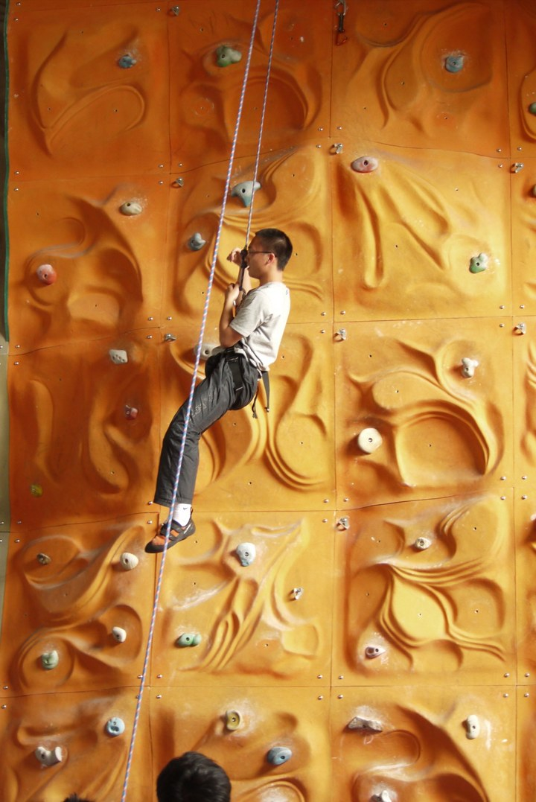 screen.width - 200){this.width = screen.width - 200}">
这也是在技能大赛上拍的，当时我爬到了离顶点还差两块板的地方，不小心脱手掉下来了
。
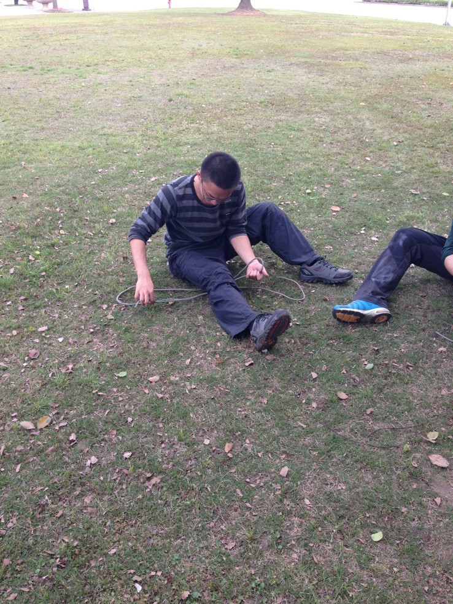 screen.width - 200){this.width = screen.width - 200}">
这是在技能大赛的时候拍的，当时我在练习打绳结，不过图片定格的那一刻我在打的是什
么结我就不太记得起来了，好像是平结。
钱小宇，12级医学院。
我的名字很好记~记不住就叫小宇好了~虽然在闵行只待一年，但是还是认识了很多人，在
协会学会了很多东西。
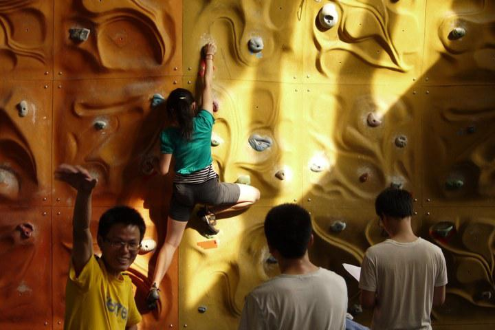 screen.width - 200){this.width = screen.width - 200}">
（如果不是技能挑战赛，如果不是姚姐，如果我没有人人= =连张老子攀岩的照片都找不到
啊，次奥。）（其实我觉得亮点在瑞叔o(╯□╰)o）
喜欢攀岩，松哥说在岩壁上你可以发现自己有很多肌肉竟然还是有用的。我觉得这是一件
很神奇的事，也许会动作纠结，但是当你做到的时候会惊讶于自己的表现
虽然对自然岩壁不怎么会的样子，感觉和人工的岩壁完全不一样啊！！
好吧，其实我的攀岩还是很挫的。。。据说交大同意造自己的岩壁了？！终于有自己的岩
壁了么~and攀岩队是个很欢乐的地方啊~我也还会周末回闵行攀岩的说~恩。
攀岩队前副队长：杨瑞（内部称呼：瑞叔）
水平估计有v2-v3。一直希望野攀
爱好：攀岩、跑步、户外
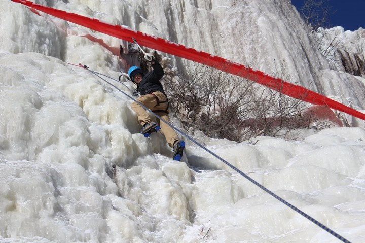 screen.width - 200){this.width = screen.width - 200}">
地大冬训（好刺激啊，尽管第一次上去腿都在发抖）
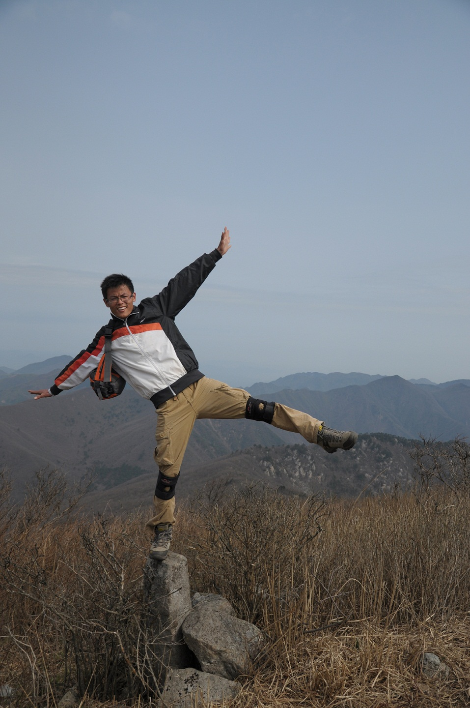 screen.width - 200){this.width = screen.width - 200}">
我的平衡不是盖的
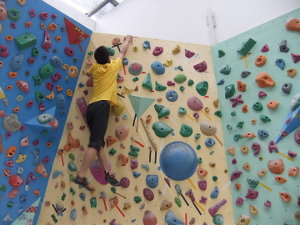 screen.width - 200){this.width = screen.width - 200}">
这可是V5啊，虽然只有一个伟（wei）岸（suo）的背影
户外经历：大明山协会内部训练、地大冬训、“三尖”穿越、“七尖”穿越、太白行and
……（此处省略10086个字）
攀岩队前队长：关正卿
爱好：攀岩 户外 阅读
户外经历：浙东溯溪 北京冬训 三尖穿越……
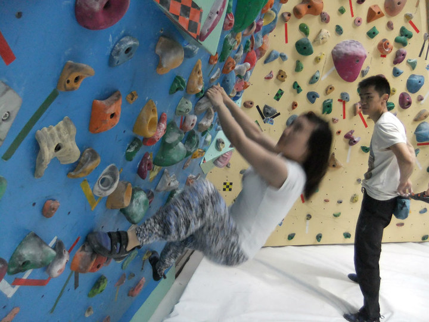 screen.width - 200){this.width = screen.width - 200}">
喜欢野协，还有那堵许久没有触摸了的岩壁，喜欢离ta很近（貌似是我爬太快了；~\(≧▽
≦)/~）
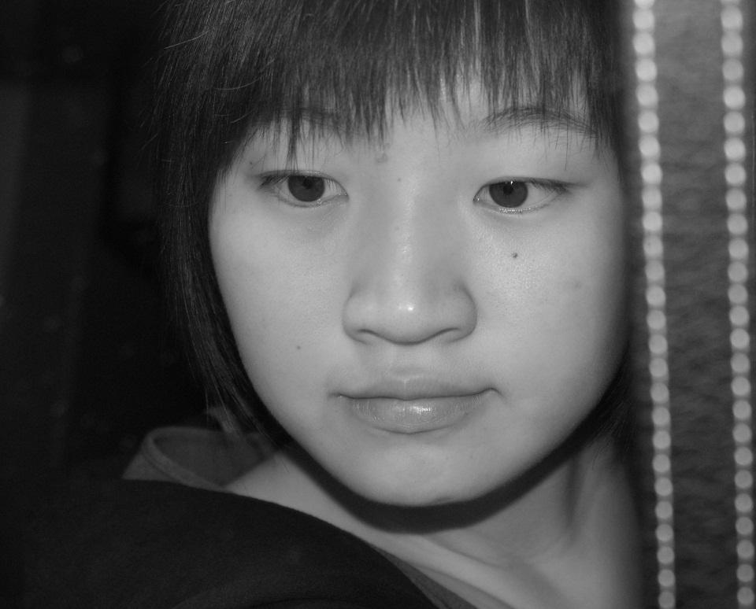 screen.width - 200){this.width = screen.width - 200}">
喜欢黑白照片，喜欢褪色后的安静(*^__^*) 嘻嘻……
大家好我是李毅，不过不是踢球的那个→_→ 常年混迹在野协打酱油，大一的时候攀岩比
较多，不过后来体重不断飙升看着小朋友们孱弱的体重实在是不忍心让他们打保护╮(╯_
╰)╭。又不好意思去辛苦我们可爱的Z-BUG，好吧其实这些，咳咳→_→ ，上学期还被宣
传部拉过去写一些稿子，也算是文艺了一把，虽然现在越来越宅（ji）了，不过依（zao）
旧节操满（jin）满（sui），好吧，介绍也就这么多希望基友们感情越来越好\(^o^)/

我是希哥，永远的希哥，陆希。
好吧，我爱野协，这是必然的
~各种小学弟小学妹快来吧~O(∩_∩)O~希哥带你们↖(^ω^)↗
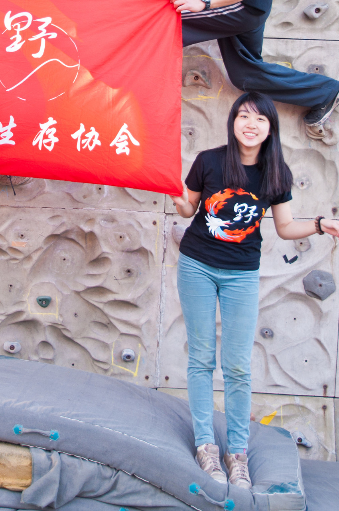 screen.width - 200){this.width = screen.width - 200}">
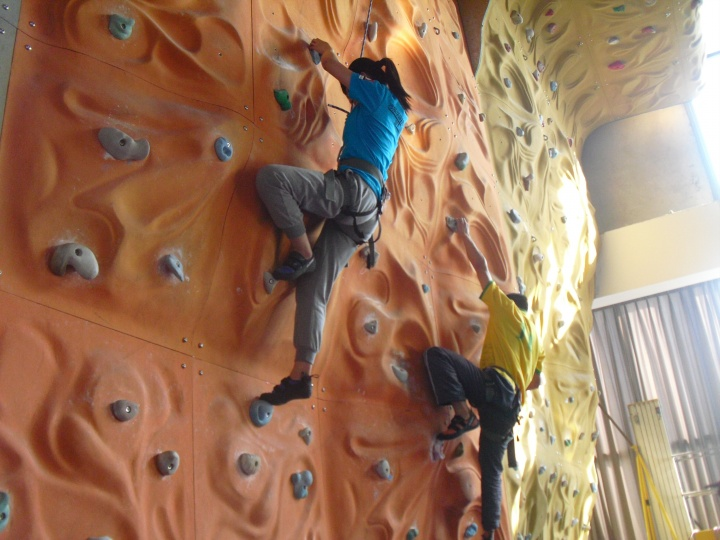 screen.width - 200){this.width = screen.width - 200}">
我攀岩还是蛮厉害的嘛%>_<%

杨佳佳，正统医学院女汉子一枚，喜欢各种运动，最爱攀岩+排球，享受每一次岩壁上的挑
战与突破，喜欢和队友在一起并肩作战！
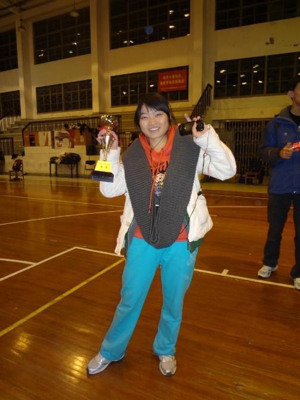 screen.width - 200){this.width = screen.width - 200}">
这张各种混搭，不过打完比赛各种痛快啊！！！
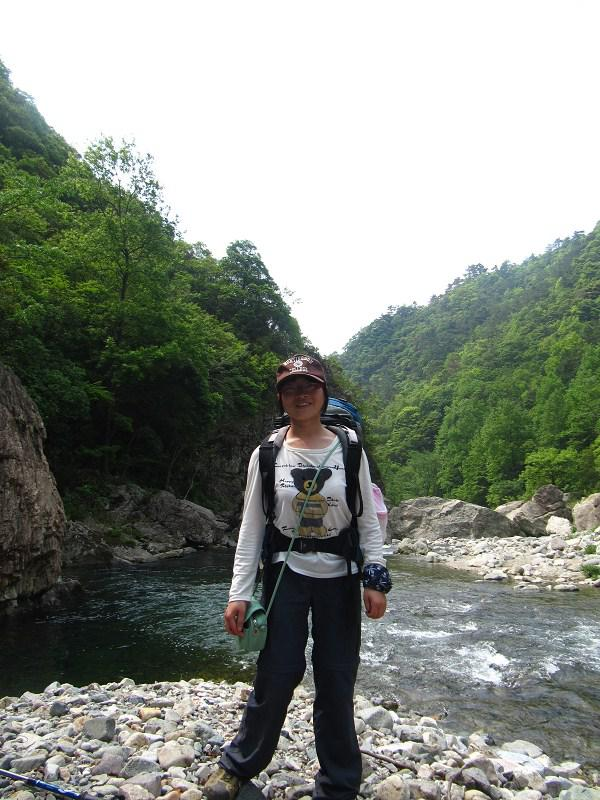 screen.width - 200){this.width = screen.width - 200}">
喜欢走水线，是水线，不是“水线” 喜欢背着包行诸山野的感觉
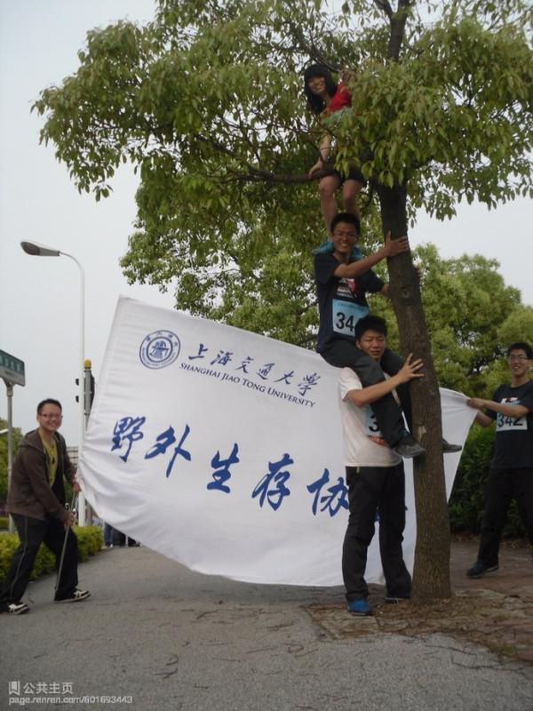 screen.width - 200){this.width = screen.width - 200}">
喜欢短跑冲刺的快感 长跑有点搓 爬楼更搓 以致翘掉本学期所有登山队的爬楼训练
无颜见队长⊙﹏⊙
这是校园跑后拍的，感觉很和谐，就拿上来了！
最后 大爱野协，喜欢大气的生活！！！
最后的最后，希望野协灿烂辉煌！
兀丰凯
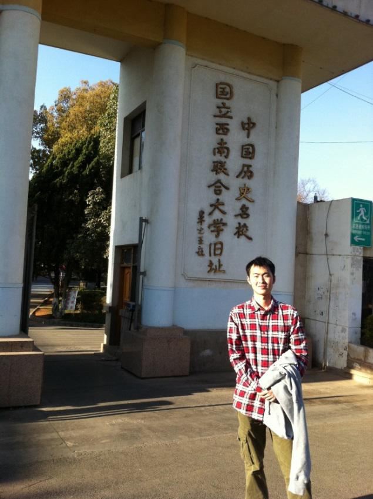 screen.width - 200){this.width = screen.width - 200}">
材料学院大二 绰号什么的同学叫过我π大π阿π之类的大家随意 爱运动爱户外爱攀
岩 自加入野协，能做到出淤泥而不染濯清涟而不妖，节操还在倍感欣慰【其实明明就是没
有存在感……
加入攀岩队在我自己看来真是场意外啊。因为想锻炼自己的臂力，喜欢攀爬的快感，
看那些在岩壁上飞檐走壁很炫酷，我就随野协来华师大爬了几次，没料到被队长选进来了
。不过太让队长失望了，水平太渣渣，仍需努力，目前的目标是：大四能爬山大屋檐！！
！
下面这张照片是去年在金紫尖。征服高峰的自豪感，遥望银河的恬静还历历在目。清
晨在野菊花盛开的山坡欣赏日出，白天穿行于魔幻的树丛间，大家仿佛都化身成为山野中
的精灵。幸福感满满啊！！

我就是传说中的秒杀宇宙超级无敌清（tong）新（yan）可（ju）爱（ru）的严皓
——01旁边的是我的好朋（ji）友——怂哥。只给大家看背了，其他的等你们加了攀岩队
就可以看（mo）了╭(╯3╰)╮
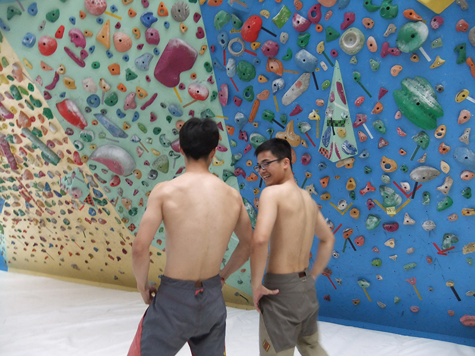 screen.width - 200){this.width = screen.width - 200}">
（PS：严皓的图太大了，传了3次都卡死在这了。。这坑爹呢这是。。晚点传吧。。）
我就是卓（2）本（B）刚~ 既然是和攀岩队团挂，那就那点攀岩的。最近就是去9A攀岩馆
啦，这张图充分反映了攀岩者不屈不挠，奋力拼搏，勇攀高峰的精神，在场的人不要吐槽
啦~~~~~
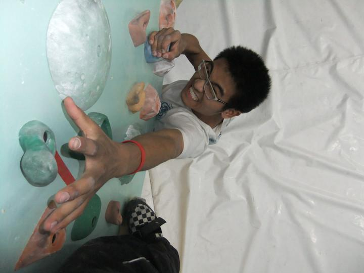 screen.width - 200){this.width = screen.width - 200}">
9A 攀岩剧照
往前推~~协会举办户外节那天，阳光大联赛的奖状发下来了，得瑟一下~~我们野协代表队
获得的奖状，哇哈哈哈
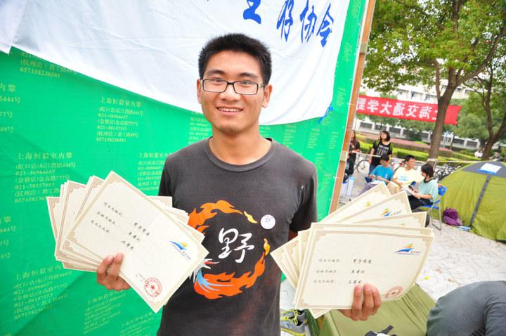 screen.width - 200){this.width = screen.width - 200}">
再往前~~~爬上打屋檐是一件很开心的事情，这张图不知道是第几次了，可惜第一次爬上的
时候yh还没有说，谁第一次上去了，他请喝奶茶~~
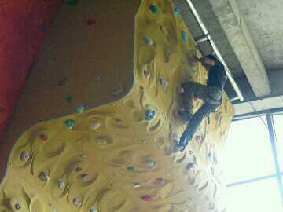 screen.width - 200){this.width = screen.width - 200}">
再往前~~~~加入岩队加入协会啦~~~~总之，加入野协是大学里面最值得一件事情~~~很喜欢
这帮朋友，心动的朋友赶快加入吧，什么时候交大的岩壁建起来了，相信我们会在这里玩
的更嗨，学到更多，得到更多。
--
※ 来源:·饮水思源 bbs.sjtu.edu.cn·[FROM: 114.81.247.37]
※ 修改:·billyxs 于 2013年06月07日07:39:37 修改本文·[FROM: 183.192.44.63]
|